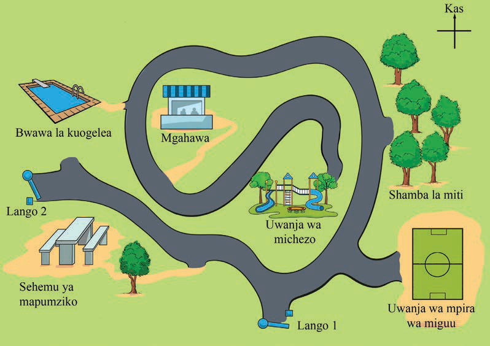

Maswali ya majibu mafupi
Chunguza Kielelezo namba 7, kisha jibu maswali yanayofuata;

6. Unafikiri kwa nini ni muhimu kuwa na uelewa kuhusu Pande Kuu za Dunia?
7. Uelekeo upi upo kati ya Kaskazini na Mashariki?
8. Chunguza Kielelezo namba 7, kisha jibu maswali yanayofuata;